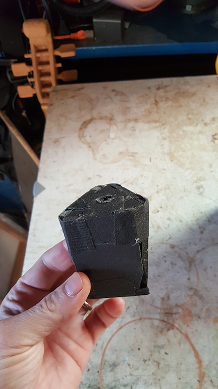
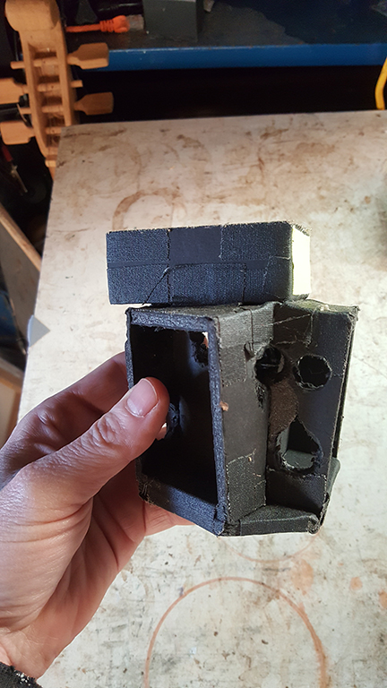
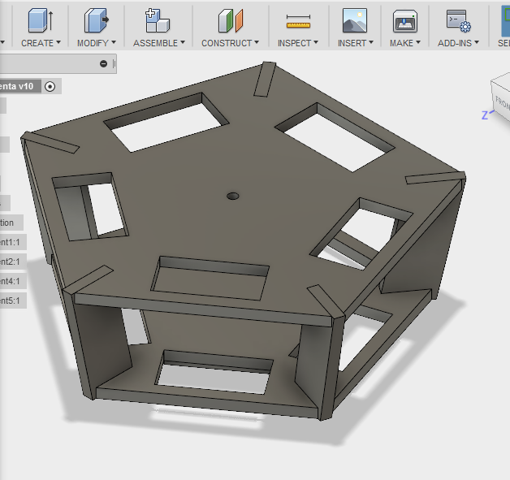
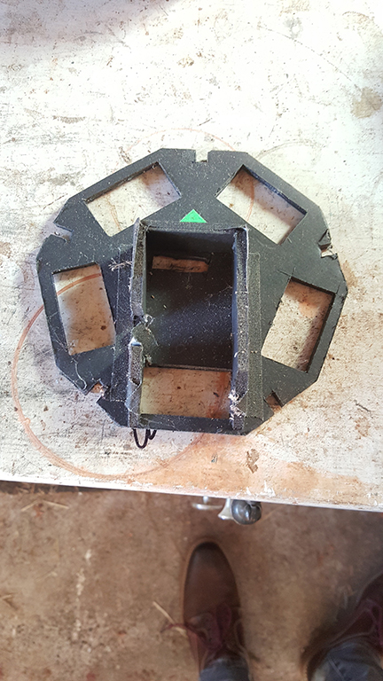

CameraConfigs
Camera Configurations
Around the end of 2015 I started making several attempts at multi camera arrays. I replaced the lenses on several cameras with spherical fisheye lenses. I have earlier posts with the details on these lenses.
I tried first a quickly made tape and foamcore 3 camera set up and stitched it. At this time I’m stitching with ptgui/touchdesigner. The cameras were held in place with rubber bands.

That went well and I tried a four camera version, adding one on top. I spent more time building this arrangement, thinking I would use this one for a while.

With this arrangement I made a few tests including this video
For this particular video, I also mixed into a 5.1 mix which played spatially in the ‘milkVR’ app on GearVR. I had used the audio from the three horizontal cams, and placed them in space just with premiere’s 5.1 audio mix features. This went really well and was pretty easy to do. This was before YT had any spatial audio support or before I learned anything about ambisonics, so the video linked above has none of that. Now that I’ve mixed some things for FOA, I thought I should remake this same video and repost it to YT. I thought it could be a good project to learn about the SpatialAudioWorkstation app which I’ve not yet tried, but I don’t know when I’ll actually get around to that, too many projects on at the moment
Front facing stero
Back to the camera configurations… after 4 camera setup, I had a notion I should make an arrangement that would make stereo video in the front facing direction and blended to monocular video everywhere else. I was very motivated to make stereo. Stereo was really the goal from the start. My two camera tests were arguably looking better than the 360 mono videos. Plus mono 360 does not feel very immersive after seeing some good stereo 360. Therefore my working theory was bad stereo might be better than good mono spherical.
This theory lead to a holder that had two pieces and held the cameras tapering at a 4 degree angle toward the ground, similar to the 3 and 4 cam rig. To make this a little easier to construct, I tried my hand at Fusion360, outputting some templates I printed with my printer, then used these to cut the foamcore

This was my first time trying to use this software. I had a tiny amount of experience in Solidworks, slightly more in onshape. This was better. It’s very cool software, pretty good learning materials.
Here is the top piece in foamcore and tape:

I shot a few tests with this, including some footage I wanted to ‘make nice’ with this arrangement.
Front facing stero is a dumb idea
After a bit of effort I just could not convince myself this front stereo idea would work well enough. This was an idea that just didn’t pan out. It was around this time I realized I could make spherical video with just two cameras back to back. I tested this and was right. In fact I concluded that the 2 camera mono-360 video using these fisheye lenses was qualitativly equal to the 4 camera video. No more resolution was being added in the stitched result. The only advantage was more points for procedurally aligning footage. If I could calibrate the rig and lock it in place, then there would be no advantage to more cameras. This back to back 180 degree fisheye arrangement is pretty much what the gear360 camera is.
Armed with this understanding, I decided the next and final chapter is a ring of 6 cameras with spherical fisheyes. With this I can stitch two images 3 cameras each, or all the right 50% of each cam into Right Eye, and the left 50% of each cam into Left Eye, for stereo video. But before I took that on, I needed to make a good quality mono stitched video, something more finished than my previous tests….. and I had just the thing with some footage I shot with the failed ‘front stereo’ rig.
I stitched up this footage in mono and mixed this with the now supported FOA (which was a whole other chapter of learning) and made something I’m pretty happy with.
For stitching, I wanted to take these efforts to a new level of quality. I knew I could not take my touchdesigner workflow any further in terms of quality, it just was what it was. After a bit of asking, I was fortunate to get on the beta for Cara VR for Nuke. These tools are very good, well considered, lots of flexibility. This is not to say there were not challenges, there were many at this time with young software, but I knew with persistence I could get the level up in quality I was after.
I was learning this tool plus I had a very challenging bit of footage with many radii/radiuses where I wanted convergence, so my result is not perfect. I worked on this over quite a number of weekends and eventually had to call it good enough to post so I could move on to new projects like the spherical stereo 6 camera idea. One of the biggest challenges was the render times. It took several days to render on my workstation, making iterations difficult. Thankfully this has improved immensely in the tool. Here is the result, best with headphones (and HMD like gearVR) if your watching in a Chrome browser. Panning the video should rotate the audio